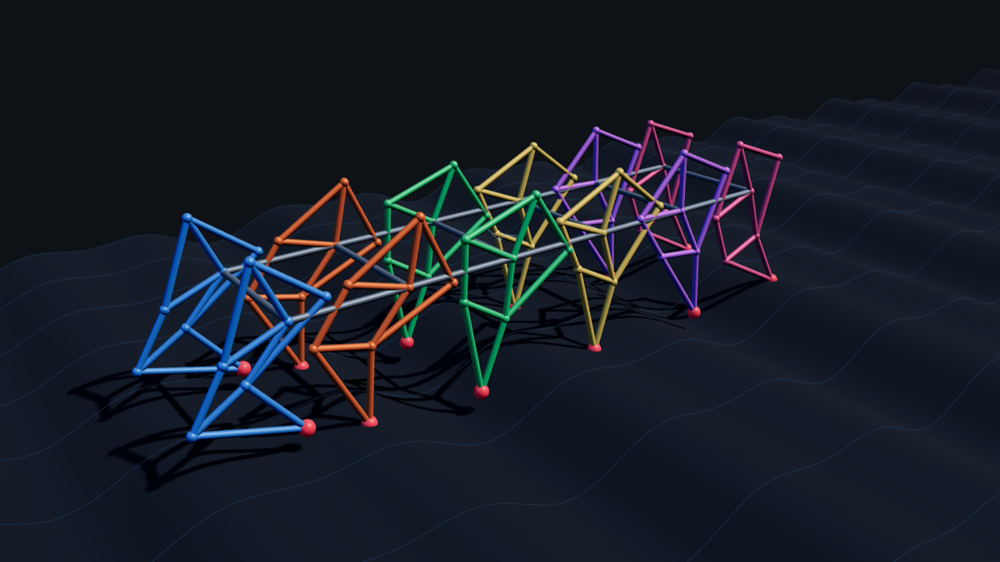

Physical models built and simulated with Dyad and ModelingToolkit, then replayed in the browser. Each demo ships the solved trajectory as static data — there is no server and nothing to install.

A twelve-legged strandbeest walking on compliant ground. The body motion is a six-state rigid-body solve with one-sided contact and regularised Coulomb friction; every leg is rebuilt in the browser from the crank angle.
Each demo is a self-contained folder — a page, a viewer, and the exported trajectory — sharing one copy of the renderer.